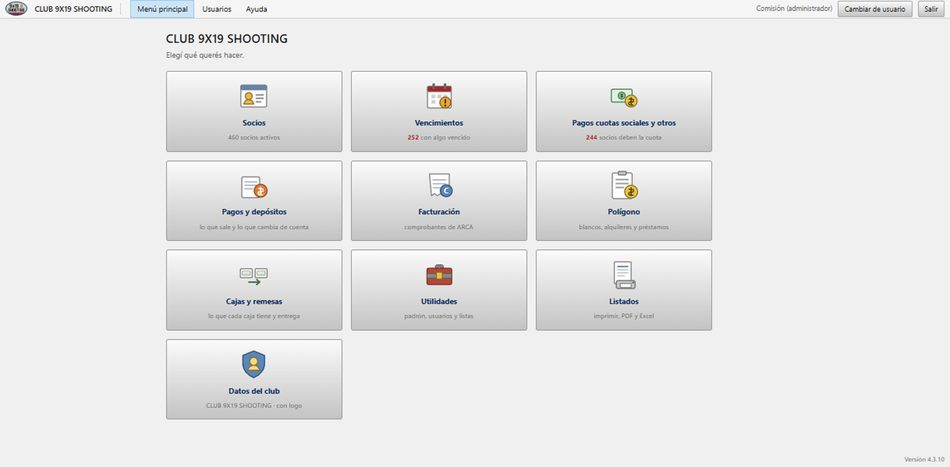
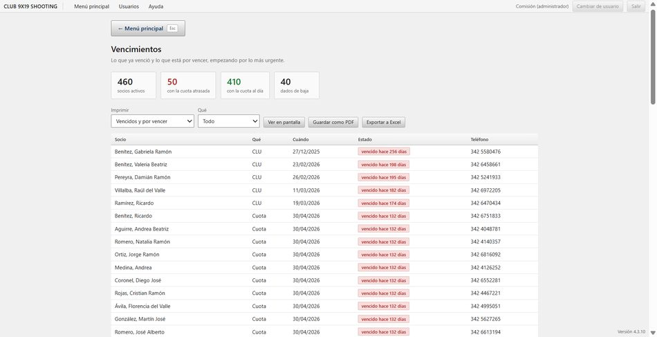
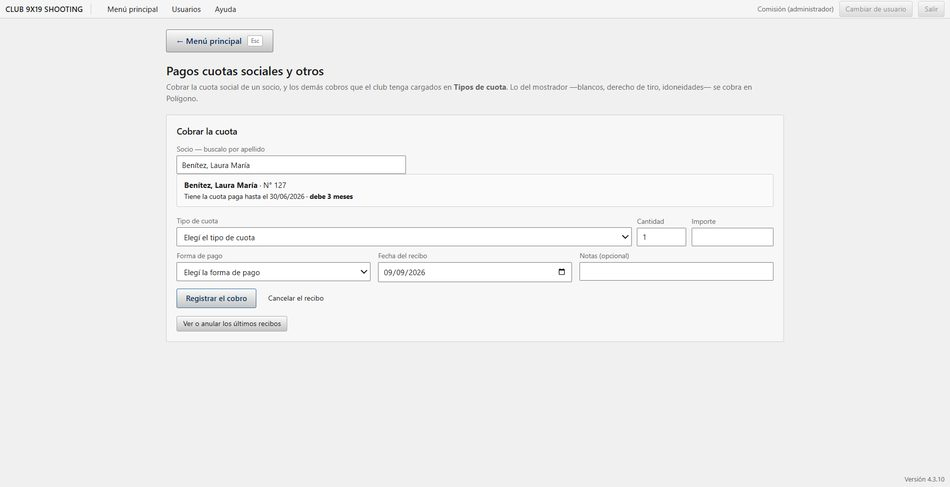
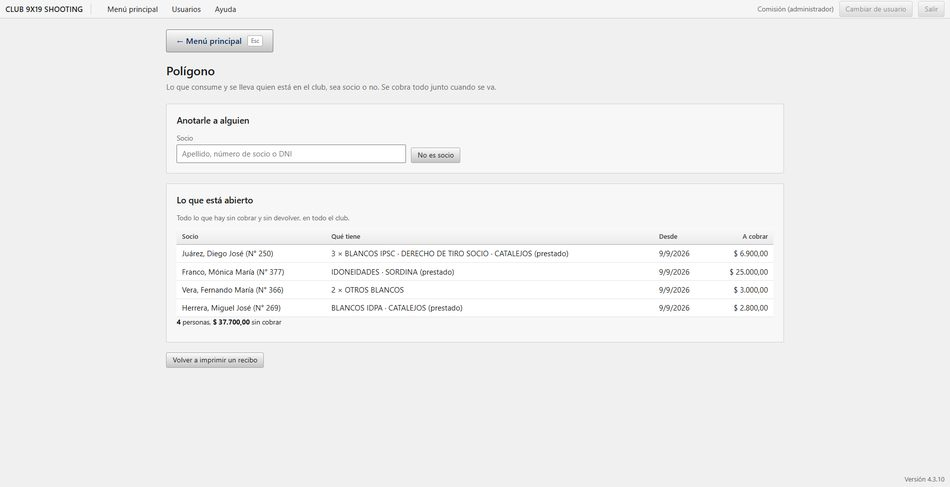
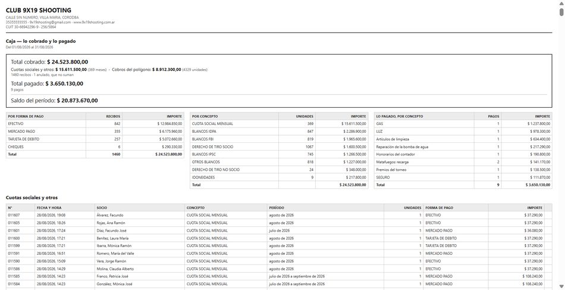
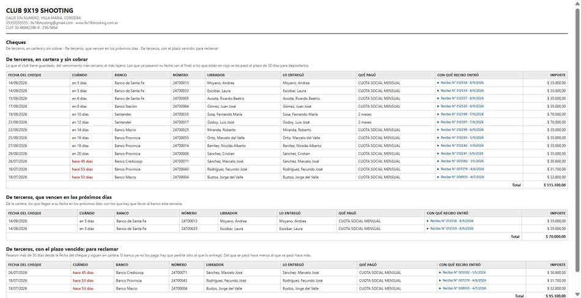

9x19 Club
Los socios, las cuotas y la caja del club, en las computadoras del club.
Se prueba 60 días completo y gratis, sin pedir una tarjeta ni un registro. Windows 10 u 11 de 64 bits, unos 110 MB. Después se activa con una clave: un solo pago, sin abono mensual.
Todo el club en un solo lugar
9x19 Club es un programa de Windows para administrar un club de tiro de punta a punta: quiénes son los socios, qué papeles tienen vencidos, quién pagó la cuota, qué se consumió en el polígono, qué paga el club, cómo queda la caja y las facturas electrónicas con ARCA. Lo desarrolló el Club 9x19 Shooting para su propia administración.
No es una App de celular: se instala en las computadoras del club y trabaja en la red interna, sin depender de internet. La facturación electrónica es la excepción, y es opcional: el club que no la use no necesita conexión para nada.
El padrón
Cada socio con sus datos, sus armas, sus disciplinas y sus papeles. Se busca por apellido, número de socio o DNI.
Vencimientos
Quién debe la cuota y a quién se le vence el CLU o el apto médico, con el teléfono al lado para llamarlo.
La cuota social
Se cobra y sale el recibo numerado. Varias cuotas juntas, con recargo si se paga fuera de término.
El polígono
Lo que consume el que vino a tirar —blancos, derecho de tiro— se le anota y se le cobra todo junto al irse. Sea socio o no.
Lo que paga el club
Luz, gas, insumos, sueldos. Con varias formas de pago en un mismo pago, y los cheques propios y de terceros.
Los cheques
Los de terceros que entraron y los propios que se entregaron, ordenados por vencimiento, con la lista de los que hay que ir a reclamar.
La caja
Lo que entró, lo que salió y el saldo, entre dos fechas, con el desglose por concepto y por forma de pago.
Cumpleaños
El día que cumple años un socio, el programa lo avisa al entrar, con su teléfono al lado para saludarlo. Y el listado del mes, para tenerlos a todos de antemano.
Dónde está la plata
Cuánto hay en efectivo, cuánto en el banco y cuánto en Mercado Pago, cada cuenta con su saldo. Con una columna en blanco para anotar lo contado y hacer el arqueo.
Facturación electrónica
Facturas A, B y C con CAE de ARCA, con su código QR y numeradas por ARCA. Y las notas de crédito, atadas a la factura que corrigen.
Así se ve






Pensado para un club de verdad
- Varias computadoras a la vez. Una guarda los datos y las demás trabajan sobre ellos por la red del club: secretaría carga un socio y en el mostrador ya está.
- Sin internet. Todo pasa adentro del club: no hace falta para usarlo ni para activarlo. La única parte que necesita conexión es la facturación electrónica, porque el CAE lo da ARCA — y sólo si el club decide usarla. Sin eso, el programa funciona igual que siempre, desconectado.
- Cada uno hace lo suyo. Los usuarios se crean con permisos: el del mostrador cobra, la tesorería paga, la comisión configura.
- Queda registrado quién hizo qué. Cada cobro, cada pago y cada cosa modificada o borrada queda anotada con el usuario, la fecha y la hora. Lo mira sólo el administrador, y desde el programa no la borra nadie — tampoco él.
- Los recibos son numerados y correlativos. Un recibo equivocado no se borra: se anula y queda anulado a la vista.
- Respaldo diario automático, todas las mañanas, sin que nadie tenga que acordarse.
- Todo se imprime: padrón, vencimientos, estado de cuenta de un socio, caja, cheques y stock. En papel, en PDF o en Excel.
- La planilla para el socio nuevo sale impresa del programa. Pide los mismos datos que la ficha, con la raya para llenarla a mano; después se cargan mirando el papel.
- El padrón se trae de un Excel. Si el club ya tenía su lista en una planilla, se importa en un rato — con el domicilio y el CUIT, que es lo que la factura necesita.
- La factura sale del cobro que ya se hizo. Al facturarle a un socio se eligen sus cobros sin facturar, así el mismo dinero no se cuenta dos veces en la caja.
- La conexión con ARCA la hace el club, una sola vez, con su clave fiscal. El programa lo acompaña paso por paso y da los pasos en PDF para llevárselos. La clave del club se genera en su computadora y no sale de ahí.
Cuánto sale
60 días de prueba, con todo funcionando y sin pedir datos de pago. Cuando se terminan, para seguir cargando hace falta activarlo con una clave.
Es un solo pago: la licencia no vence y no hay abono mensual. Vale para todo el club —no se paga por computadora—, y si algún día cambian la máquina principal, la licencia se va con los datos.
Y aunque no se active nunca, el club sigue viendo, imprimiendo y exportando todo lo que cargó. Los datos son del club.
Soporte
Escribinos a 9x19shooting@gmail.com por cualquier consulta: instalación, importar el padrón o una duda antes de comprar.
Manual de uso
Veintiún capítulos con imágenes, desde cómo se instala y se deja operativo el club hasta lo de todos los días. Va adentro del programa, en Ayuda → Manual de uso, y también se puede bajar acá.